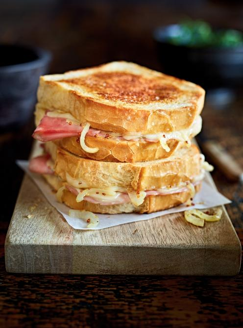

Grilled cheese au jambon

Fromage suisse, jambon blanc et tombée d’oignons, voilà les ingrédients de ce sandwich grillé qui promet de faire le bonheur des petits et des grands. Le grilled cheese tel qu’on le connaît serait la plus fantastique invention… après celle du pain tranché. C’est la possibilité, à partir des années 1920, d’assembler des tranches de pain et de fromage carrées qui a donné au grilled cheese sa popularité. Dans notre version, la mayo est l’ingrédient secret qui empêche le fromage de figer, pour un intérieur bien fondant.
Ingrédients
- oignon, émincé
- 15 ml(1 c. à soupe) d’huile végétale
- 5 ml (1 c. à thé) de moutarde à l’ancienne
- 8 tranches de pain blanc
- 140 g (5 oz) de tranches fines de jambon blanc
- 140 g (5 oz) de tranches de fromage suisse, cheddar ou mozzarella
- Mayonnaise, au goût
- Beurre tempéré, au goût
Étapes
- Dans une grande poêle antiadhésive à feu moyen, attendrir l’oignon dans l’huile. Saler et poivrer. Retirer du feu, puis ajouter la moutarde. Réserver dans un bol. Nettoyer la poêle.
- Badigeonner l’intérieur des tranches de pain de mayonnaise. Répartir le jambon, l’oignon, puis le fromage sur la moitié des tranches. Fermer les sandwichs. Beurrer l’extérieur du pain.
- Dans la même poêle à feu moyen, dorer deux sandwichs à la fois. Retourner délicatement et poursuivre la cuisson jusqu’à ce que le fromage soit fondu, soit environ 3 minutes de chaque côté.